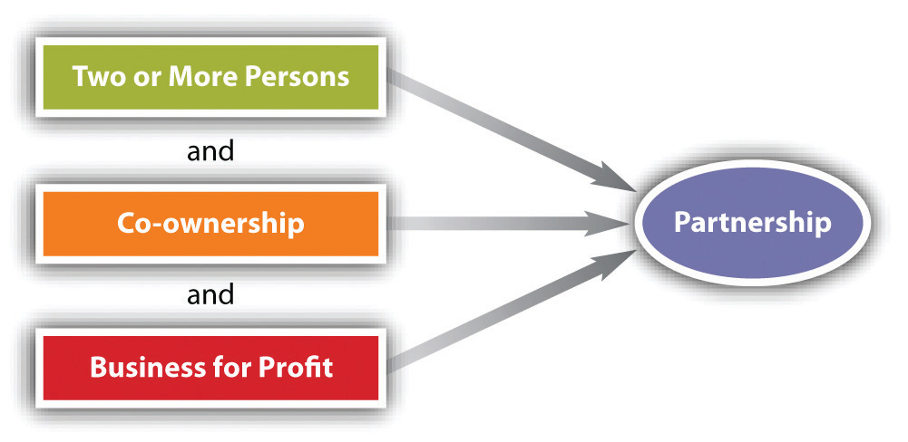

After reading this chapter, you should understand the following:
It would be difficult to conceive of a complex society that did not operate its businesses through organizations. In this chapter we study partnerships, limited partnerships, and limited liability companies, and we touch on joint ventures and business trusts.
When two or more people form their own business or professional practice, they usually consider becoming partners. Partnership law defines a partnershipTwo or more persons carrying on a business as co-owners for profit. as “the association of two or more persons to carry on as co-owners a business for profit…whether or not the persons intend to form a partnership.”Revised Uniform Partnership Act, Section 202(a). In 2011, there were more than three million business firms in the United States as partnerships (see Table 22.1 "Selected Data: Number of US Partnerships, Limited Partnerships, and Limited Liability Companies", showing data to 2006), and partnerships are a common form of organization among accountants, lawyers, doctors, and other professionals. When we use the word partnership, we are referring to the general business partnership. There are also limited partnerships and limited liability partnerships, which are discussed in Chapter 24 "Hybrid Business Forms".
Table 22.1 Selected Data: Number of US Partnerships, Limited Partnerships, and Limited Liability Companies
| 2003 | 2004 | 2005 | 2006 | |
|---|---|---|---|---|
| Total number of active partnerships | 2,375,375 | 2,546,877 | 2,763,625 | 2,947,116 |
| Number of partners | 14,108,458 | 15,556,553 | 16,211,908 | 16,727,803 |
| Number of limited partnerships | 378,921 | 402,238 | 413,712 | 432,550 |
| Number of partners | 6,262,103 | 7,023,921 | 6,946,986 | 6,738,737 |
| Number of limited liability companies | 1,091,502 | 1,270,236 | 1,465,223 | 1,630,161 |
| Number of partners | 4,226,099 | 4,949,808 | 5,640,146 | 6,361,958 |
Source: IRS, http://www.irs.gov/pub/irs-soi/09sprbul.pdf.
Partnerships are also popular as investment vehicles. Partnership law and tax law permit an investor to put capital into a limited partnership and realize tax benefits without liability for the acts of the general partners.
Even if you do not plan to work within a partnership, it can be important to understand the law that governs it. Why? Because it is possible to become someone’s partner without intending to or even realizing that a partnership has been created. Knowledge of the law can help you avoid partnership liability.
Partnership is an ancient form of business enterprise, and special laws governing partnerships date as far back as 2300 BC, when the Code of Hammurabi explicitly regulated the relations between partners. Partnership was an important part of Roman law, and it played a significant role in the law merchant, the international commercial law of the Middle Ages.
In the nineteenth century, in both England and the United States, partnership was a popular vehicle for business enterprise. But the law governing it was jumbled. Common-law principles were mixed with equitable standards, and the result was considerable confusion. Parliament moved to reduce the uncertainty by adopting the Partnership Act of 1890, but codification took longer in the United States. The Commissioners on Uniform State Laws undertook the task at the turn of the twentieth century. The Uniform Partnership Act (UPA), completed in 1914, and the Uniform Limited Partnership Act (ULPA), completed in 1916, were the basis of partnership law for many decades. UPA and ULPA were adopted by all states except Louisiana.
Despite its name, UPA was not enacted uniformly among the states; moreover, it had some shortcomings. So the states tinkered with it, and by the 1980s, the National Conference of Commissioners on Uniform Laws (NCCUL) determined that a revised version was in order. An amended UPA appeared in 1992, and further amendments were promulgated in 1993, 1994, 1996, and 1997. The NCCUL reports that thirty-nine states have adopted some version of the revised act. This chapter will discuss the Revised Uniform Partnership Act (RUPA) as promulgated in 1997, but because not all jurisdictions have not adopted it, where RUPA makes significant changes, the original 1914 UPA will also be considered.NCCUSL, Uniform Law Commission, “Acts: Partnership Act,” http://www.nccusl.org/Act.aspx?title=Partnership%20Act. The following states have adopted the RUPA: Alabama, Alaska, Arizona, Arkansas, California, Colorado, Delaware, District of Columbia, Florida, Hawaii, Idaho, Illinois, Iowa, Kansas, Kentucky, Maine, Maryland, Minnesota, Mississippi, Montana, Nebraska, Nevada, New Jersey, New Mexico, North Dakota, Oklahoma, Oregon, Puerto Rico, South Dakota (substantially similar), Tennessee, Texas (substantially similar), US Virgin Islands, Vermont, Virginia, and Washington. Connecticut, West Virginia, and Wyoming adopted the 1992 or 1994 version. Here are the states that have not adopted RUPA (Louisiana never adopted UPA at all): Georgia, Indiana, Massachusetts, Michigan, Mississippi, New Hampshire, New York, North Carolina, Ohio, Pennsylvania, Rhode Island, and Wisconsin. The NCCUL observes in its “prefatory note” to the 1997 act: “The Revised Act is largely a series of ‘default rules’ that govern the relations among partners in situations they have not addressed in a partnership agreement. The primary focus of RUPA is the small, often informal, partnership. Larger partnerships generally have a partnership agreement addressing, and often modifying, many of the provisions of the partnership act.”University of Pennsylvania Law School, Biddle Law Library, “Uniform Partnership Act (1997),” NCCUSL Archives, http://www.law.upenn.edu/bll/archives/ulc/fnact99/1990s/upa97fa.pdf.
A significant difference between a partnership and most other kinds of business organization relates to whether, and the extent to which, the business is a legal entity. A legal entity is a person or group that the law recognizes as having legal rights, such as the right to own and dispose of property, to sue and be sued, and to enter into contracts; the entity theoryThe concept of a business firm as a legal person, with existence and accountability separate from its owners. is the concept of a business firm as a legal person, with existence and accountability separate from its owners. When individuals carry out a common enterprise as partners, a threshold legal question is whether the partnership is a legal entity. The common law said no. In other words, under the common-law theory, a partnership was but a convenient name for an aggregate of individuals, and the rights and duties recognized and imposed by law are those of the individual partners. By contrast, the mercantile theory of the law merchant held that a partnership is a legal entity that can have rights and duties independent of those of its members.
During the drafting of the 1914 UPA, a debate raged over which theory to adopt. The drafters resolved the debate through a compromise. In Section 6(1), UPA provides a neutral definition of partnership (“an association of two or more persons to carry on as co-owners a business for profit”) and retained the common-law theory that a partnership is an aggregation of individuals—the aggregate theoryThe theory that a business firm is not an entity but rather a collection of individual owners who bind themselves together to share profits..
RUPA moved more toward making partnerships entities. According to the NCCUL, “The Revised Act enhances the entity treatment of partnerships to achieve simplicity for state law purposes, particularly in matters concerning title to partnership property. RUPA does not, however, relentlessly apply the entity approach. The aggregate approach is retained for some purposes, such as partners’ joint and several liability.”University of Pennsylvania Law School, Biddle Law Library, “Uniform Partnership Act (1997),” NCCUSL Archives, http://www.law.upenn.edu/bll/archives/ulc/fnact99/1990s/upa97fa.pdf. Section 201(a) provides, “A partnership is an entity distinct from its partners.”RUPA, Section 201(a).
Under RUPA, then, a partnership has entity characteristics, but the partners remain guarantors of partnership obligations, as always—that is the partners’ joint and several liability noted in the previous paragraph (and discussed further in Chapter 23 "Partnership Operation and Termination"). This is a very important point and a primary weakness of the partnership form: all partners are, and each one of them is, ultimately personally liable for the obligations of the partnership, without limit, which includes personal and unlimited liability. This personal liability is very distasteful, and it has been abolished, subject to some exceptions, with limited partnerships and limited liability companies, as discussed in Chapter 24 "Hybrid Business Forms". And, of course, the owners of corporations are also not generally liable for the corporation’s obligations, which is a major reason for the corporate form’s popularity.
Under both versions of the law, the partnership may keep business records as if it were a separate entity, and its accountants may treat it as such for purposes of preparing income statements and balance sheets.
Under both versions of the law, partnerships are not taxable entities, so they do not pay income taxes. Instead, each partner’s distributive share, which includes income or other gain, loss, deductions, and credits, must be included in the partner’s personal income tax return, whether or not the share is actually distributed.
In litigation, the aggregate theory causes some inconvenience in naming and serving partnership defendants: under UPA, lawsuits to enforce a partnership contract or some other right must be filed in the name of all the partners. Similarly, to sue a partnership, the plaintiff must name and sue each of the partners. This cumbersome procedure was modified in many states, which enacted special statutes expressly permitting suits by and against partnerships in the firm name. In suits on a claim in federal court, a partnership may sue and be sued in its common name. The move by RUPA to make partnerships entities changed very little. Certainly it provides that “a partnership may sue and be sued in the name of the partnership”—that’s handy where the plaintiff hopes for a judgment against the partnership, without recourse to the individual partners’ personal assets.RUPA, Section 307(a). But a plaintiff must still name the partnership and the partners individually to have access to both estates, the partnership and the individuals’: “A judgment against a partnership is not by itself a judgment against a partner. A judgment against a partnership may not be satisfied from a partner’s assets unless there is also a judgment against the partner.”RUPA, Section 307(c).
Aggregate theory concepts bedeviled property co-ownership issues, so UPA finessed the issue by stating that partnership property, real or personal, could be held in the name of the partners as “tenants in partnership”—a type of co-ownership—or it could be held in the name of the partnership.Uniform Partnership Act, Section 25(1); UPA, Section 8(3). Under RUPA, “property acquired by the partnership is property of the partnership and not of the partners.”RUPA, Section 203. But RUPA is no different from UPA in practical effect. The latter provides that “property originally brought into the partnership stock or subsequently acquired by purchase…on account of the partnership, is partnership property.”UPA, Section 8(1). Under either law, a partner may bring onto the partnership premises her own property, not acquired in the name of the partnership or with its credit, and it remains her separate property. Under neither law can a partner unilaterally dispose of partnership property, however labeled, for the obvious reason that one cannot dispose of another’s property or property rights without permission.UPA, Sections 9(3)(a) and 25; RUPA, Section 302. And keep in mind that partnership law is the default: partners are free to make up partnership agreements as they like, subject to some limitations. They are free to set up property ownership rules as they like.
Under federal bankruptcy law—state partnership law is preempted—a partnership is an entity that may voluntarily seek the haven of a bankruptcy court or that may involuntarily be thrust into a bankruptcy proceeding by its creditors. The partnership cannot discharge its debts in a liquidation proceeding under Chapter 7 of the bankruptcy law, but it can be rehabilitated under Chapter 11 (see Chapter 35 "Bankruptcy").
Partnership law is very important because it is the way most small businesses are organized and because it is possible for a person to become a partner without intending to. Partnership law goes back a long way, but in the United States, most states—but not all—have adopted the Revised Uniform Partnership Act (RUPA, 1997) over the previous Uniform Partnership Act, originally promulgated in 1914. One salient change made by RUPA is to directly announce that a partnership is an entity: it is like a person for purposes of accounting, litigation, bankruptcy, and owning real estate. Partnerships do not pay taxes; the individual partners do. But in practical terms, what RUPA does is codify already-existing state law on these matters, and partners are free to organize their relationship as they like in the partnership agreement.
The most common way of forming a partnership is expressly—that is, in words, orally or in writing. Such a partnership is called an express partnershipA partnership intentionally created and recognized, orally or in writing.. If parties have an express partnership with no partnership agreement, the relevant law—the Uniform Partnership Act (UPA) or the Revised Uniform Partnership Act (RUPA)—applies the governing rules.
Assume that three persons have decided to form a partnership to run a car dealership. Able contributes $250,000. Baker contributes the building and space in which the business will operate. Carr contributes his services; he will manage the dealership.
The first question is whether Able, Baker, and Carr must have a partnership agreement. As should be clear from the foregoing discussion, no agreement is necessary as long as the tests of partnership are met. However, they ought to have an agreement in order to spell out their rights and duties among themselves.
The agreement itself is a contract and should follow the principles and rules spelled out in Chapter 8 "Introduction to Contract Law" through Chapter 16 "Remedies" of this book. Because it is intended to govern the relations of the partners toward themselves and their business, every partnership contract should set forth clearly the following terms: (1) the name under which the partners will do business; (2) the names of the partners; (3) the nature, scope, and location of the business; (4) the capital contributions of each partner; (5) how profits and losses are to be divided; (6) how salaries, if any, are to be determined; (7) the responsibilities of each partner for managing the business; (8) limitations on the power of each partner to bind the firm; (9) the method by which a given partner may withdraw from the partnership; (10) continuation of the firm in the event of a partner’s death and the formula for paying a partnership interest to his heirs; and (11) method of dissolution.
In forming a partnership, three of these items merit special attention. And note again that if the parties do not provide for these in their agreement, RUPA will do it for them as the default.
As discussed earlier in this chapter, a partnership is not limited to a direct association between human beings but may also include an association between other entities, such as corporations or even partnerships themselves.A joint venture—sometimes known as a joint adventure, coadventure, joint enterprise, joint undertaking, syndicate, group, or pool—is an association of persons to carry on a particular task until completed. In essence, a joint venture is a “temporary partnership.” In the United States, the use of joint ventures began with the railroads in the late 1800s. Throughout the middle part of the twentieth century joint ventures were common in the manufacturing sector. By the late 1980s, they increasingly appeared in both manufacturing and service industries as businesses looked for new, competitive strategies. They are aggressively promoted on the Internet: “Joint Ventures are in, and if you’re not utilizing this strategic weapon, chances are your competition is, or will soon be, using this to their advantage.…possibly against you!” (Scott Allen, “Joint Venturing 101,” About.com Entrepreneurs, http://entrepreneurs.about.com/od/beyondstartup/a/jointventures.htm).As a risk-avoiding device, the joint venture allows two or more firms to pool their differing expertise so that neither needs to “learn the ropes” from the beginning; neither needs the entire capital to start the enterprise.Partnership rules generally apply, although the relationship of the joint venturers is closer to that of special than general agency as discussed in Chapter 20 "Relationships between Principal and Agent". Joint venturers are fiduciaries toward one another. Although no formality is necessary, the associates will usually sign an agreement. The joint venture need have no group name, though it may have one. Property may be owned jointly. Profits and losses will be shared, as in a partnership, and each associate has the right to participate in management. Liability is unlimited.Sometimes two or more businesses will form a joint venture to carry out a specific task—prospecting for oil, building a nuclear reactor, doing basic scientific research—and will incorporate the joint venture. In that case, the resulting business—known as a “joint venture corporation”—is governed by corporation law, not the law of partnership, and is not a joint venture in the sense described here. Increasingly, companies are forming joint ventures to do business abroad; foreign investors or governments own significant interests in these joint ventures. For example, in 1984 General Motors entered into a joint venture with Toyota to revive GM’s shuttered Fremont, California, assembly plant to create New United Motor Manufacturing, Inc. (NUMMI). For GM the joint venture was an opportunity to learn about lean manufacturing from the Japanese company, while Toyota gained its first manufacturing base in North America and a chance to test its production system in an American labor environment. Until May 2010, when the copartnership ended and the plant closed, NUMMI built an average of six thousand vehicles a week, or nearly eight million cars and trucks. These vehicles were the Chevrolet Nova (1984–88), the Geo Prizm (1989–97), the Chevrolet Prizm (1998–2002), and the Hilux (1991–95, predecessor of the Tacoma), as well as the Toyota Voltz, the Japanese right-hand-drive version of the Pontiac Vibe. The latter two were based on the Toyota Matrix. Paul Stenquist, “GM and Toyota’s Joint Venture Ends in California,” New York Times, April 2, 2010, http://wheels.blogs.nytimes.com/2010/04/02/g-m-and-toyotas-joint-venture-ends-in-california. Family members can be partners, and partnerships between parents and minor children are lawful, although a partner who is a minor may disaffirm the agreement.
If the business cannot be performed within one year from the time that the agreement is entered into, the partnership agreement should be in writing to avoid invalidation under the Statute of Frauds. Most partnerships have no fixed term, however, and are partnerships “at will” and therefore not covered by the Statute of Frauds.
Able, Baker, and Carr decide that it makes good business sense to choose an imposing, catchy, and well-known name for their dealership—General Motors Corporation. There are two reasons why they cannot do so. First, their business is a partnership, not a corporation, and should not be described as one. Second, the name is deceptive because it is the name of an existing business. Furthermore, if not registered, the name would violate the assumed or fictitious name statutes of most states. These require that anyone doing business under a name other than his real name register the name, together with the names and addresses of the proprietors, in some public office. (Often, the statutes require the proprietors to publish this information in the newspapers when the business is started.) As Loomis v. Whitehead in Section 22.3.2 "Creation of a Partnership: Registering the Name" shows, if a business fails to comply with the statute, it could find that it will be unable to file suit to enforce its contracts.
An implied partnershipA partnership that arises where parties’ behavior objectively manifests an intention to create a relationship that the law recognizes as a partnership. exists when in fact there are two or more persons carrying on a business as co-owners for profit. For example, Carlos decides to paint houses during his summer break. He gathers some materials and gets several jobs. He hires Wally as a helper. Wally is very good, and pretty soon both of them are deciding what jobs to do and how much to charge, and they are splitting the profits. They have an implied partnership, without intending to create a partnership at all.
But how do we know whether an implied partnership has been created? Obviously, we know if there is an express agreement. But partnerships can come into existence quite informally, indeed, without any formality—they can be created accidentally. In contrast to the corporation, which is the creature of statute, partnership is a catchall term for a large variety of working relationships, and frequently, uncertainties arise about whether or not a particular relationship is that of partnership. The law can reduce the uncertainty in advance only at the price of severely restricting the flexibility of people to associate. As the chief drafter of the Uniform Partnership Act (UPA, 1914) explained,
All other business associations are statutory in origin. They are formed by the happening of an event designated in a statute as necessary to their formation. In corporations this act may be the issuing of a charter by the proper officer of the state; in limited partnerships, the filing by the associates of a specified document in a public office. On the other hand, an infinite number of combinations of circumstances may result in co-ownership of a business. Partnership is the residuum, including all forms of co-ownership, of a business except those business associations organized under a specific statute.W. D. Lewis, “The Uniform Partnership Act,” Yale Law Journal 24 (1915): 617, 622.
Figure 22.1 Partnership Tests
Because it is frequently important to know whether a partnership exists (as when a creditor has dealt with only one party but wishes to also hold others liable by claiming they were partners, see Section 22.3.1 "Tests of Partnership Existence", Chaiken v. Employment Security Commission), a number of tests have been established that are clues to the existence of a partnership (see Figure 22.1 "Partnership Tests"). We return to the definition of a partnership: “the association of two or more persons to carry on as co-owners a business for profit[.]” The three elements are (1) the association of persons, (2) as co-owners, (3) for profit.
This element is pretty obvious. A partnership is a contractual agreement among persons, so the persons involved need to have capacity to contract. But RUPA does not provide that only natural persons can be partners; it defines person as follows: “‘Person’ means an individual, corporation, business trust, estate, trust, partnership, association, joint venture, government, governmental subdivision, agency, or instrumentality, or any other legal or commercial entity.”RUPA, Section 101(10). Thus unless state law precludes it, a corporation can be a partner in a partnership. The same is true under UPA.
If what two or more people own is clearly a business—including capital assets, contracts with employees or agents, an income stream, and debts incurred on behalf of the operation—a partnership exists. A tougher question arises when two or more persons co-own property. Do they automatically become partners? The answer can be important: if one of the owners while doing business pertinent to the property injures a stranger, the latter could sue the other owners if there is a partnership.
Co-ownership comes in many guises. The four most common are joint tenancy, tenancy in common, tenancy by the entireties, and community property. In joint tenancy, the owners hold the property under a single instrument, such as a deed, and if one dies, the others automatically become owners of the deceaseds share, which does not descend to his heirs. Tenancy in common has the reverse rule: the survivor tenants do not take the deceaseds share. Each tenant in common has a distinct estate in the property. The tenancy by the entirety and community property (in community-property states) forms of ownership are limited to spouses, and their effects are similar to that of joint tenancy.
Suppose a husband and wife who own their home as tenants by the entirety (or community property) decide to spend the summer at the seashore and rent their home for three months. Is their co-ownership sufficient to establish that they are partners? The answer is no. By UPA Section 7(2) and RUPA Section 202(b)(1), the various forms of joint ownership by themselves do not establish partnership, whether or not the co-owners share profits made by the use of the property. To establish a partnership, the ownership must be of a business, not merely of property.
There are two aspects to consider with regard to profits: first, whether the business is for-profit, and second, whether there is a sharing of the profit.
Unincorporated nonprofit organizations (UNAs) cannot be partnerships. The paucity of coherent law governing these organizations gave rise in 2005 to the National Conference of Commissioners of Uniform Laws’ promulgation of the Revised Uniform Unincorporated Nonprofit Association Act (RUUNAA). The prefatory note to this act says, “RUUNAA was drafted with small informal associations in mind. These informal organizations are likely to have no legal advice and so fail to consider legal and organizational questions, including whether to incorporate. The act provides better answers than the common law for a limited number of legal problems…There are probably hundreds of thousands of UNAs in the United States including unincorporated nonprofit philanthropic, educational, scientific and literary clubs, sporting organizations, unions, trade associations, political organizations, churches, hospitals, and condominium and neighborhood associations.”Revised Uniform Unincorporated Nonprofit Associations Act, http://www.abanet.org/intlaw/leadership/policy/RUUNAA_Final_08.pdf. At least twelve states have adopted RUUNAA or its predecessor.
While co-ownership does not establish a partnership unless there is a business, a business by itself is not a partnership unless co-ownership is present. Of the tests used by courts to determine co-ownership, perhaps the most important is sharing of profits. Section 202(c) of RUPA provides that “a person who receives a share of the profits of a business is presumed to be a partner in the business,” but this presumption can be rebutted by showing that the share of the profits paid out was (1) to repay a debt; (2) wages or compensation to an independent contractor; (3) rent; (4) an annuity, retirement, or health benefit to a representative of a deceased or retired partner; (5) interest on a loan, or rights to income, proceeds, or increase in value from collateral; or (5) for the sale of the goodwill of a business or other property. Section 7(4) of UPA is to the same effect.
Courts are not limited to the profit-sharing test; they also look at these factors, among others: the right to participate in decision making, the duty to share liabilities, and the manner in which the business is operated. Section 22.3.1 "Tests of Partnership Existence", Chaiken v. Employment Security Commission, illustrates how these factors are weighed in court.
Ordinarily, if two people are not legally partners, then third parties cannot so regard them. For example, Mr. Tot and Mr. Tut own equal shares of a house that they rent but do not regard it as a business and are not in fact partners. They do have a loose “understanding” that since Mr. Tot is mechanically adept, he will make necessary repairs whenever the tenants call. On his way to the house one day to fix its boiler, Mr. Tot injures a pedestrian, who sues both Mr. Tot and Mr. Tut. Since they are not partners, the pedestrian cannot sue them as if they were; hence Mr. Tut has no partnership liability.
Suppose that Mr. Tot and Mr. Tut happened to go to a lumberyard together to purchase materials that Mr. Tot intended to use to add a room to the house. Short of cash, Mr. Tot looks around and espies Mr. Tat, who greets his two friends heartily by saying within earshot of the salesman who is debating whether to extend credit, “Well, how are my two partners this morning?” Messrs. Tot and Tut say nothing but smile faintly at the salesman, who mistakenly but reasonably believes that the two are acknowledging the partnership. The salesman knows Mr. Tat well and assumes that since Mr. Tat is rich, extending credit to the “partnership” is a “sure thing.” Messrs. Tot and Tut fail to pay. The lumberyard is entitled to collect from Mr. Tat, even though he may have forgotten completely about the incident by the time suit is filed. Under Uniform Partnership Act Section 16(1), Mr. Tat would be liable for the debt as being part of a partnership by estoppelPartnership arising when in fact none exists, where one allows himself or herself to be represented as a partner, thus incurring partnership liability.. The Revised Uniform Partnership Act is to the same effect:
Section 308. Liability of Purported Partner.
(a) If a person, by words or conduct, purports to be a partner, or consents to being represented by another as a partner, in a partnership or with one or more persons not partners, the purported partner is liable to a person to whom the representation is made, if that person, relying on the representation, enters into a transaction with the actual or purported partnership.
Partnership by estoppel has two elements: (1) a representation to a third party that there is in fact a partnership and (2) reliance by the third party on the representation. See Section 22.3.3 "Partnership by Estoppel", Chavers v. Epsco, Inc., for an example of partnership by estoppel.
A partnership is any two or more persons—including corporate persons—carrying on a business as co-owners for profit. A primary test of whether a partnership exists is whether there is a sharing of profits, though other factors such as sharing decision making, sharing liabilities, and how the business is operated are also examined.
Most partnerships are expressly created. Several factors become important in the partnership agreement, whether written or oral. These include the name of the business, the capital contributions of each partner, profit sharing, and decision making. But a partnership can also arise by implication or by estoppel, where one has held herself as a partner and another has relied on that representation.
Chaiken v. Employment Security Commission
274 A.2d 707 (Del. 1971)
STOREY, J.
The Employment Security Commission, hereinafter referred to as the Commission, levied an involuntary assessment against Richard K. Chaiken, complainant, hereinafter referred to as Chaiken, for not filing his unemployment security assessment report. Pursuant to the same statutory section, a hearing was held and a determination made by the Commission that Chaiken was the employer of two barbers in his barber shop and that he should be assessed as an employer for his share of unemployment compensation contributions. Chaiken appealed the Commission’s decision.…
Both in the administrative hearing and in his appeal brief Chaiken argues that he had entered into partnership agreements with each of his barbers and, therefore, was and is not subject to unemployment compensation assessment. The burden is upon the individual assessed to show that he is outside the ambit of the statutory sections requiring assessment. If Chaiken’s partnership argument fails he has no secondary position and he fails to meet his burden.
Chaiken contends that he and his “partners”:
Of the three factors, the last is most important. Agreements of “partnership” were executed between Chaiken and Mr. Strazella, a barber in the shop, and between Chaiken and Mr. Spitzer, similarly situated. The agreements were nearly identical. The first paragraph declared the creation of a partnership and the location of business. The second provided that Chaiken would provide barber chair, supplies, and licenses, while the other partner would provide tools of the trade. The paragraph also declared that upon dissolution of the partnership, ownership of items would revert to the party providing them. The third paragraph declared that the income of the partnership would be divided 30% for Chaiken, 70% for Strazella; 20% for Chaiken and 80% for Spitzer. The fourth paragraph declared that all partnership policy would be decided by Chaiken, whose decision was final. The fifth paragraph forbade assignment of the agreement without permission of Chaiken. The sixth paragraph required Chaiken to hold and distribute all receipts. The final paragraph stated hours of work for Strazella and Spitzer and holidays.
The mere existence of an agreement labeled “partnership” agreement and the characterization of signatories as “partners” docs not conclusively prove the existence of a partnership. Rather, the intention of the parties, as explained by the wording of the agreement, is paramount.
A partnership is defined as an association of two or more persons to carry on as co-owners a business for profit. As co-owners of a business, partners have an equal right in the decision making process. But this right may be abrogated by agreement of the parties without destroying the partnership concept, provided other partnership elements are present.
Thus, while paragraph four reserves for Chaiken all right to determine partnership policy, it is not standing alone, fatal to the partnership concept. Co-owners should also contribute valuable consideration for the creation of the business. Under paragraph two, however, Chaiken provides the barber chair (and implicitly the barber shop itself), mirror, licenses and linen, while the other partners merely provide their tools and labor—nothing more than any barber-employee would furnish. Standing alone, however, mere contribution of work and skill can be valuable consideration for a partnership agreement.
Partnership interests may be assignable, although it is not a violation of partnership law to prohibit assignment in a partnership agreement. Therefore, paragraph five on assignment of partnership interests does not violate the partnership concept. On the other hand, distribution of partnership assets to the partners upon dissolution is only allowed after all partnership liabilities are satisfied. But paragraph two of the agreement, in stating the ground rules for dissolution, makes no declaration that the partnership assets will be utilized to pay partnership expenses before reversion to their original owners. This deficiency militates against a finding in favor of partnership intent since it is assumed Chaiken would have inserted such provision had he thought his lesser partners would accept such liability. Partners do accept such liability, employees do not.
Most importantly, co-owners carry on “a business for profit.” The phrase has been interpreted to mean that partners share in the profits and the losses of the business. The intent to divide the profits is an indispensable requisite of partnership. Paragraph three of the agreement declares that each partner shall share in the income of the business. There is no sharing of the profits, and as the agreement is drafted, there are no profits. Merely sharing the gross returns does not establish a partnership. Nor is the sharing of profits prima facie evidence of a partnership where the profits received are in payment of wages.
The failure to share profits, therefore, is fatal to the partnership concept here.
Evaluating Chaiken’s agreement in light of the elements implicit in a partnership, no partnership intent can be found. The absence of the important right of decision making or the important duty to share liabilities upon dissolution individually may not be fatal to a partnership. But when both are absent, coupled with the absence of profit sharing, they become strong factors in discrediting the partnership argument. Such weighing of the elements against a partnership finding compares favorably with Fenwick v. Unemployment Compensation Commission, which decided against the partnership theory on similar facts, including the filing of partnership income tax forms.
In addition, the total circumstances of the case taken together indicate the employer-employee relationship between Chaiken and his barbers. The agreement set forth the hours of work and days off—unusual subjects for partnership agreements. The barbers brought into the relationship only the equipment required of all barber shop operators. And each barber had his own individual “partnership” with Chaiken. Furthermore, Chaiken conducted all transactions with suppliers, and purchased licenses, insurance, and the lease for the business property in his own name. Finally, the name “Richard’s Barber Shop” continued to be used after the execution of the so-called partnership agreements. [The Commission’s decision is affirmed.]
Loomis v. Whitehead
183 P.3d 890 (Nev. 2008)
Per Curiam.
In this appeal, we address whether [Nevada Revised Statute] NRS 602.070 bars the partners of an unregistered fictitious name partnership from bringing an action arising out of a business agreement that was not made under the fictitious name. [The statute] prohibits persons who fail to file an assumed or fictitious name certificate from suing on any contract or agreement made under the assumed or fictitious name. We conclude that it does not bar the partners from bringing the action so long as the partners did not conduct the business or enter into an agreement under the fictitious name or otherwise mislead the other party into thinking that he was doing business with some entity other than the partners themselves.
Appellants Leroy Loomis and David R. Shanahan raised and sold cattle in Elko County, Nevada. Each of the appellants had certain responsibilities relating to the cattle business. Loomis supplied the livestock and paid expenses, while Shanahan managed the day-to-day care of the cattle. Once the cattle were readied for market and sold, Loomis and Shanahan would share the profits equally. While Loomis and Shanahan often called themselves the 52 Cattle Company, they had no formal partnership agreement and did not file an assumed or fictitious name certificate in that name. Loomis and Shanahan bring this appeal after an agreement entered into with respondent Jerry Carr Whitehead failed.
In the fall of 2003, Shanahan entered into a verbal agreement with Whitehead, a rancher, through Whitehead’s ranch foreman to have their cattle wintered at Whitehead’s ranch. Neither Loomis nor Whitehead was present when the ranch foreman made the deal with Shanahan, but the parties agree that there was no mention of the 52 Cattle Company at the time they entered into the agreement or anytime during the course of business thereafter. Shanahan and Loomis subsequently alleged that their cattle were malnourished and that a number of their cattle died from starvation that winter at Whitehead’s ranch. Whitehead denied these allegations.
The following summer, Shanahan and Loomis sued Whitehead, claiming negligence and breach of contract. Later, well into discovery, Whitehead was made aware of the existence of the 52 Cattle Company when Shanahan stated in his deposition that he did not actually own any of the cattle on Whitehead’s ranch. In his deposition, he described the partnership arrangement. At about the same time, Whitehead learned that the name “52 Cattle Company” was not registered with the Elko County Clerk.
Whitehead then filed a motion for partial summary judgment, asserting that, pursuant to NRS 602.070, Loomis and Shanahan’s failure to register their fictitiously named partnership with the county clerk barred them from bringing a legal action. The district court agreed with Whitehead, granted the motion, and dismissed Loomis and Shanahan’s claims. Loomis and Shanahan timely appealed.
The district court found that Loomis and Shanahan conducted business under a fictitious name without filing a fictitious name certificate with the Elko County Clerk as required by NRS 602.010.NRS 602.010(1): “Every person doing business in this state under an assumed or fictitious name that is in any way different from the legal name of each person who owns an interest in the business must file with the county clerk of each county in which the business is being conducted a certificate containing the information required by NRS 602.020.” The district court therefore concluded that, pursuant to NRS 602.070, they were barred from bringing an action against Whitehead because they did not file a fictitious name certificate for the 52 Cattle Company.NRS 602.070: “No action may be commenced or maintained by any person…upon or on account of any contract made or transaction had under the assumed or fictitious name, or upon or on account of any cause of action arising or growing out of the business conducted under that name, unless before the commencement of the action the certificate required by NRS 602.010 has been filed.”
Loomis and Shanahan contend that the district court erred in granting partial summary judgment because they did not enter into a contract with Whitehead under the name of the 52 Cattle Company, and they did not conduct business with Whitehead under that name. Loomis and Shanahan argue that NRS 602.070 is not applicable to their action against Whitehead because they did not mislead Whitehead into thinking that he was doing business with anyone other than them. We agree.…
When looking at a statute’s language, this court is bound to follow the statute’s plain meaning, unless the plain meaning was clearly not intended. Here, in using the phrase “under the assumed or fictitious name,” the statute clearly bars bringing an action when the claims arise from a contract, transaction, or business conducted beneath the banner of an unregistered fictitious name. However, NRS 602.070 does not apply to individual partners whose transactions or business with another party were not performed under the fictitious name.
Here, Whitehead knew that Shanahan entered into the oral contract under his own name. He initially thought that Shanahan owned the cattle and Loomis had “some type of interest.” Shanahan did not enter into the contract under the fictitious “52 Cattle Company” name. Moreover, Whitehead does not allege that he was misled by either Loomis or Shanahan in any way that would cause him to think he was doing business with the 52 Cattle Company. In fact, Whitehead did not know of the 52 Cattle Company until Shanahan mentioned it in his deposition. Under these circumstances, when there simply was no indication that Loomis and Shanahan represented that they were conducting business as the 52 Cattle Company and no reliance by Whitehead that he was doing business with the 52 Cattle Company, NRS 602.070 does not bar the suit against Whitehead.
We therefore reverse the district court’s partial summary judgment in this instance and remand for trial because, while the lawsuit between Loomis and Whitehead involved partnership business, the transaction at issue was not conducted and the subsequent suit was not maintained under the aegis of the fictitiously named partnership.
Chavers v. Epsco, Inc.
98 S.W.3d 421 (Ark. 2003)
Hannah, J.
Appellants Reggie Chavers and Mark Chavers appeal a judgment entered against them by the Craighead County Circuit Court. Reggie and Mark argue that the trial court erred in holding them liable for a company debt based upon partnership by estoppel because the proof was vague and insufficient and there was no detrimental reliance on the part of a creditor. We hold that the trial court was not clearly erroneous in finding liability based upon partnership by estoppel. Accordingly, we affirm.
Gary Chavers operated Chavers Welding and Construction (“CWC”), a construction and welding business, in Jonesboro. Gary’s sons Reggie Chavers and Mark Chavers joined their father in the business after graduating from high school. Gary, Mark, and Reggie maintain that CWC was a sole proprietorship owned by Gary, and that Reggie and Mark served only as CWC employees, not as CWC partners.
In February 1999, CWC entered into an agreement with Epsco, Inc. (“Epsco”), a staffing service, to provide payroll and employee services for CWC. Initially, Epsco collected payments for its services on a weekly basis, but later, Epsco extended credit to CWC. Melton Clegg, President of Epsco, stated that his decision to extend credit to CWC was based, in part, on his belief that CWC was a partnership.
CWC’s account with Epsco became delinquent, and Epsco filed a complaint against Gary, Reggie, and Mark, individually, and doing business as CWC, to recover payment for the past due account. Gary discharged a portion of his obligation to Epsco due to his filing for bankruptcy. Epsco sought to recover CWC’s remaining debt from Reggie and Mark. After a hearing on March 7, 2002, the trial court issued a letter opinion, finding that Reggie and Mark “represented themselves to [Epsco] as partners in an existing partnership and operated in such a fashion to give creditors in general, and Epsco in particular, the impression that such creditors/potential creditors were doing business with a partnership.…” On May 21, 2002, the trial court entered an order stating that Reggie and Mark were partners by estoppel as relates to Epsco. The trial court found that Reggie and Mark were jointly and severally liable for the debt of CWC in the amount of $80,360.92. In addition, the trial court awarded Epsco pre-judgment interest at the rate of six percent, post-judgment interest at the rate of ten percent, and attorney’s fees in the amount of $8,036.92.
[The relevant Arkansas statute provides]:
(1) When a person, by words spoken or written or by conduct, represents himself, or consents to another representing him to any one, as a partner in an existing partnership or with one (1) or more persons not actual partners, he is liable to any person to whom such representation has been made, who has, on the faith of such representation, given credit to the actual or apparent partnership, and if he has made such representation or consented to its being made in a public manner, he is liable to that person, whether the representation has or has not been made or communicated to that person so giving credit by or with the knowledge of the apparent partner making the representation or consenting to it being made.
(a) When a partnership liability results, he is liable as though he were an actual member of the partnership.
We have long recognized the doctrine of partnership by estoppel. [Citation, 1840], the court stated that
they who hold themselves out to the world as partners in business or trade, are to be so regarded as to creditors and third persons; and the partnership may be established by any evidence showing that they so hold themselves out to the public, and were so regarded by the trading community.
Further, we have stated that “[p]artnerships may be proved by circumstantial evidence; and evidence will sometimes fix a joint liability, where persons are charged as partners, in a suit by a third person, when they are not, in fact, partners as between themselves.” [Citation, 1843.]
In [Citation, 1906], the court noted that
[a] person who holds himself out as a partner of a firm is estopped to deny such representation, not only as to those as to whom the representation was directly made, but as to all others who had knowledge of such holding out and in reliance thereon sold goods to the firm.…
In addition, “if the party himself puts out the report that he is a partner, he will be liable to all those selling goods to the firm on the faith and credit of such report.” [Citation] When a person holds himself out as a member of partnership, any one dealing with the firm on the faith of such representation is entitled to assume the relation continues until notice of some kind is given of its discontinuance. [Citations]
In [Citation, 1944], the court wrote:
It is a thoroughly well-settled rule that persons who are not as between themselves partners, or as between whom there is in fact no legal partnership, may nevertheless become subject to the liabilities of partners, either by holding themselves out as partners to the public and the world generally or to particular individuals, or by knowingly or negligently permitting another person to do so. All persons who hold themselves out, or knowingly permit others to hold them out, to the public as partners, although they are not in partnership, become bound as partners to all who deal with them in their apparent relation.
The liability as a partner of a person who holds himself out as a partner, or permits others to do so, is predicated on the doctrine of estoppel and on the policy of the law seeking to prevent frauds on those who lend their money on the apparent credit of those who are held out as partners. One holding himself out as a partner or knowingly permitting himself to be so held out is estopped from denying liability as a partner to one who has extended credit in reliance thereon, although no partnership has in fact existed.
In the present case, the trial court cited specific examples of representations made by Reggie and Mark indicating that they were partners of CWC, including correspondence to Epsco, checks written to Epsco, business cards distributed to the public, and credit applications. We will discuss each in turn.
Epsco argues that Plaintiff’s Exhibit # 1, a faxed list of credit references, clearly indicates that Gary was the owner and that Reggie and Mark were partners in the business. The fax lists four credit references, and it includes CWC’s contact information. The contact information lists CWC’s telephone number, fax number, and federal tax number. The last two lines of the contact information state: “Gary Chavers Owner” and “Reggie Chavers and Mark Chavers Partners.”
Gary testified that he did not know that the list of credit references was faxed to Epsco. In addition, he testified that his signature was not at the bottom of the fax. He testified that his former secretary might have signed his name to the fax; however, he stated that he did not authorize his secretary to sign or fax a list of credit references to Epsco. Moreover, Gary testified that the first time he saw the list of credit references was at the bench trial.
This court gives deference to the superior position of the trial judge to determine the credibility of the witnesses and the weight to be accorded their testimony. [Citations] Though there was a dispute concerning whether Gary faxed the list to Epsco, the trial court found that Epsco received the faxed credit references from CWC and relied on CWC’s statement that Reggie and Mark were partners. The trial court’s finding is not clearly erroneous.
At trial, Epsco introduced Plaintiff’s Exhibit # 2, a fax cover sheet from “Chavers Construction” to Epsco. The fax cover sheet was dated July 19, 2000. The fax cover sheet contained the address, telephone number, and fax number of the business. Listed under this information was “Gary, Reggie, or Mark Chavers.” Epsco argues that Gary, Reggie, and Mark are all listed on the fax cover sheet, and that this indicates that they were holding themselves out to the public as partners of the business. The trial court’s finding that the fax cover sheet indicated that Reggie and Mark were holding themselves out as partners of CWC is not clearly erroneous.
Epsco introduced Plaintiff’s Exhibit # 9, a personnel credit application, which was received from CWC. Adams testified that the exhibit represented a completed credit application that she received from CWC. The type of business checked on the credit application is “partnership.” Adams testified that the application showed the company to be a partnership, and that this information was relied upon in extending credit. Clegg testified that he viewed the credit application which indicated that CWC was a partnership, and that his decision to extend credit to CWC was based, in part, on his belief that CWC was a partnership. Gary denied filling out the credit application form.
It was within the trial court’s discretion to find Adams’s and Clegg’s testimony more credible than Gary’s testimony and to determine that Epsco relied on the statement of partnership on the credit application before extending credit to CWC. The trial court’s finding concerning the credit application is not clearly erroneous.
Epsco argues that Plaintiff’s Exhibit # 3 and Plaintiff’s Exhibit # 11, checks written to Epsco showing the CWC account to be in the name of “Gary A. or Reggie J. Chavers,” indicates that Reggie was holding himself out to be a partner of CWC. Plaintiff’s Exhibit # 3 was signed by Gary, and Plaintiff’s Exhibit # 11 was signed by Reggie. The checks are evidence that Reggie was holding himself out to the public as a partner of CWC, and Epsco could have detrimentally relied on the checks before extending credit to CWC. The trial court was not clearly erroneous in finding that the checks supported a finding of partnership by estoppel.
Epsco introduced Plaintiff’s Exhibit # 4, a business card that states “Chavers Welding, Construction & Crane Service.” Listed on the card as “owners” are Gary Chavers and Reggie Chavers. Gary testified that the business cards were printed incorrectly, and that Reggie’s name should not have been included as an owner. He also testified that some of the cards might have been handed out, and that it was possible that he might have given one of the cards to a business listed as one of CWC’s credit references on Plaintiff’s Exhibit # 1.
The business card listing Reggie as an owner indicates that Reggie was holding himself out as a partner. As we stated in [Citation] when a person holds himself out as a member of partnership, any one dealing with the firm on the faith of such representation is entitled to assume the relation continues until notice of some kind is given of its discontinuance. There is no indication that Reggie ever informed any person who received a business card that the business relationship listed on the card was incorrect or had been discontinued. The trial court’s finding concerning the business card is not clearly erroneous.
Epsco introduced Plaintiff’s Exhibit # 5, an application form from “Chavers Welding,” signed by Reggie, seeking a dealership from Sukup Manufacturing. The application, dated January 23, 1997, lists “Gary & Reggie Chavers” as owners of “Chavers Welding.” The application is signed by Reggie. Reggie admits that he signed the dealership application and represented that he was an owner of “Chavers Welding,” but he dismisses his statement of ownership as mere “puffery” on his part. Epsco argues that instead, the application shows that Reggie was holding himself out to the public as being a partner. The trial court’s determination that Reggie’s dealership application supports a finding of partnership by estoppel is not clearly erroneous.
In sum, the trial court was not clearly erroneous in finding that Reggie and Mark held themselves out as partners of CWC and that Epsco detrimentally relied on the existence of the partnership before extending credit to CWC. The appellants argue that even if we find Reggie liable based upon partnership by estoppel, there was scant proof of Mark being liable based upon partnership by estoppel. We disagree. We are aware that some examples of holding out cited in the trial court’s order pertain only to Reggie. However, the representations attributed to both Reggie and Mark are sufficient proof to support the trial court’s finding that both Reggie and Mark are estopped from denying liability to Epsco.
Affirmed.
The basic law of partnership is found in the Uniform Partnership Act and Revised Uniform Partnership Act. The latter has been adopted by thirty-five states. At common law, a partnership was not a legal entity and could not sue or be sued in the partnership name. Partnership law defines a partnership as “an association of two or more persons to carry on as co-owners a business for profit.” The Uniform Partnership Act (UPA) assumes that a partnership is an aggregation of individuals, but it also applies a number of rules characteristic of the legal entity theory. The Revised Uniform Partnership Act (RUPA) assumes a partnership is an entity, but it applies one crucial rule characteristic of the aggregate theory: the partners are ultimately liable for the partnership’s obligations. Thus a partnership may keep business records as if it were a legal entity, may hold real estate in the partnership name, and may sue and be sued in federal court and in many state courts in the partnership name.
Partnerships may be created informally. Among the clues to the existence of a partnership are (1) co-ownership of a business, (2) sharing of profits, (3) right to participate in decision making, (4) duty to share liabilities, and (5) manner in which the business is operated. A partnership may also be formed by implication; it may be formed by estoppel when a third party reasonably relies on a representation that a partnership in fact exists.
No special rules govern the partnership agreement. As a practical matter, it should sufficiently spell out who the partners are, under what name they will conduct their business, the nature and scope of the business, capital contributions of each partner, how profits are to be divided, and similar pertinent provisions. An oral agreement to form a partnership is valid unless the business cannot be performed wholly within one year from the time that the agreement is made. However, most partnerships have no fixed terms and hence are “at-will” partnerships not subject to the Statute of Frauds.
The basic law of partnership is currently found in
Existence of a partnership may be established by
Which is false?
Partnerships
Partnerships